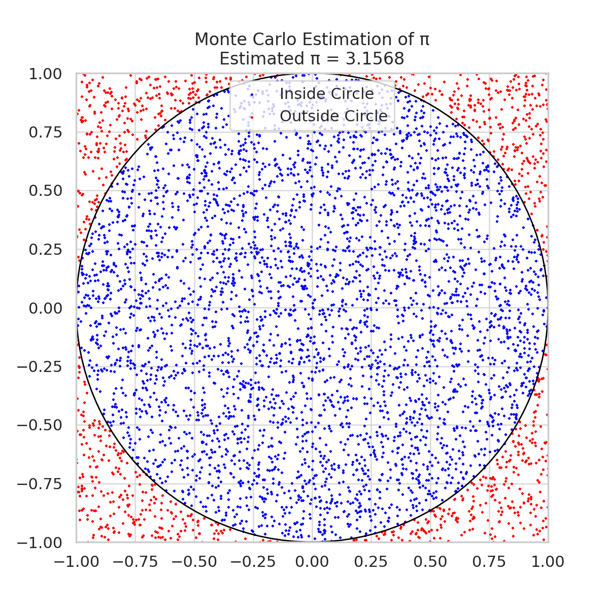
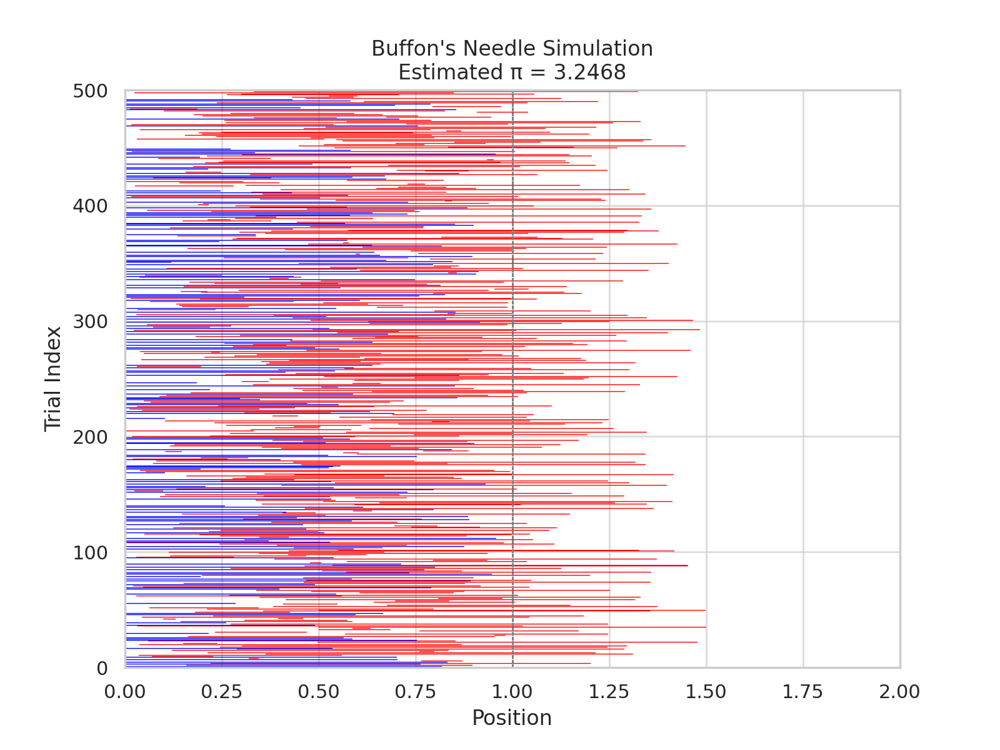

🧮 Problem 2: Estimating π Using Monte Carlo Methods
🎯 Motivation
Monte Carlo simulations are a powerful computational tool that uses random sampling to estimate mathematical quantities. A classic example is estimating the value of π (pi). Two intuitive and historically significant methods are:
- Geometric probability using a unit circle.
- Buffon’s Needle experiment.
These methods illustrate how randomness can approximate deterministic values and are widely used in physics, finance, and engineering.
🔢 Part 1: Estimating π Using a Circle
📚 Theoretical Foundation
The area of a unit circle (radius = 1) is:
If we embed the unit circle inside a square of side 2 (from -1 to 1), the area of the square is:
If we randomly generate points within the square, the proportion that falls inside the circle is:
Thus, we estimate π as:
💻 Python Simulation (Circle Method)
import numpy as np
import matplotlib.pyplot as plt
N = 10000
x = np.random.uniform(-1, 1, N)
y = np.random.uniform(-1, 1, N)
inside = x**2 + y**2 <= 1
pi_estimate = 4 * np.sum(inside) / N
# Plot
plt.figure(figsize=(6, 6))
plt.scatter(x[inside], y[inside], color='green', s=1, label='Inside Circle')
plt.scatter(x[~inside], y[~inside], color='red', s=1, label='Outside Circle')
plt.title(f"Monte Carlo π Estimate: {pi_estimate:.4f}")
plt.xlabel("x")
plt.ylabel("y")
plt.axis("equal")
plt.legend()
plt.grid(True)
plt.savefig("monte_carlo_circle.png")
plt.show()
📊 Visualization

🧪 Part 2: Estimating π Using Buffon’s Needle
📚 Theoretical Foundation
Buffon’s Needle problem estimates π by simulating dropping a needle of length ℓ on a floor with parallel lines spaced d units apart. If ℓ ≤ d, the probability P of the needle crossing a line is:
💻 Python Simulation (Buffon's Needle)
import numpy as np
import matplotlib.pyplot as plt
def buffon_simulation(n_drops=10000, needle_length=1.0, line_spacing=1.5):
crosses = 0
x_coords, y_coords = [], []
for _ in range(n_drops):
center = np.random.uniform(0, line_spacing / 2)
angle = np.random.uniform(0, np.pi / 2)
tip = center + (needle_length / 2) * np.sin(angle)
if tip >= line_spacing / 2:
crosses += 1
x_coords.append(center)
y_coords.append(angle)
pi_estimate = (2 * needle_length * n_drops) / (line_spacing * crosses)
return pi_estimate, x_coords, y_coords
pi_buffon, x_vals, y_vals = buffon_simulation()
# Visualization
plt.figure(figsize=(8, 4))
plt.scatter(x_vals, y_vals, s=1, color='blue')
plt.title(f"Buffon's Needle π Estimate: {pi_buffon:.4f}")
plt.xlabel("Needle center (x)")
plt.ylabel("Angle (rad)")
plt.grid(True)
plt.savefig("buffons_needle.png")
plt.show()
📊 Visualization

📈 Accuracy and Convergence
- Monte Carlo Circle Method improves in accuracy with more points.
- Buffon’s Needle Method converges slower and depends on angle randomness.
- Circle method generally gives better estimates for fewer trials.
✅ Conclusion
Both methods reveal how randomness and geometry can approximate π:
- The circle method is visually intuitive and computationally efficient.
- The Buffon’s needle experiment connects physical probability and mathematics.
These simulations illustrate core ideas of numerical approximation, convergence, and statistical estimation.